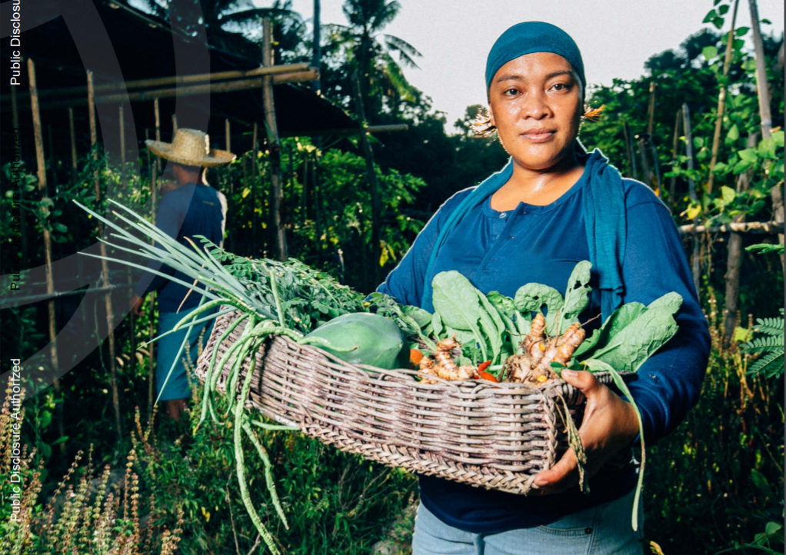

MANILA, September 9, 2020--- Transforming Philippine agriculture into a dynamic, high-growth sector is essential for the country to speed up recovery, poverty reduction and inclusive growth, according to the latest report released by the World Bank.

Titled "*Transforming Philippine Agriculture During Covid-19 and Beyond*," the report says that transforming the country's farming and food systems is even more important during the Covid-19 pandemic to ensure strong food value chains, affordable and nutritious food, and a vibrant rural economy.
"Modernizing the country's agricultural sector is a very important agenda for the Philippines," said Ndiame Diop, World Bank Country Director Brunei, Malaysia, Thailand, and the Philippines. "With the exception of a few small natural resource-rich countries, no country has successfully transitioned from middle- to high-income status without having achieved an effective transformation of their agri-food systems. Transforming agriculture and food systems is always challenging. But the country's new vision for agriculture, it's current thrust for diversification and use of modern technologies, and its effective management of food supply during this pandemic clearly indicate that the country is well-equipped to overcome the challenge."
"Our vision is a food-secure and resilient Philippines with prosperous farmers and fisherfolk," Agriculture Secretary William Dar said. "Realizing this vision will require dedicated efforts among major agri-fishery industry stakeholders, led by the Department of Agriculture, to continuously empower farmers, fisherfolk, agricultural entrepreneurs, and the private sector to increase agricultural productivity and profitability, taking into account sustainability and resilience."
The report, which was prepared as part of World Bank support to the Department of Agriculture's "new thinking" in agricultural development, suggests shifting away from a heavy focus on specific crops towards improving the overall resilience, competitiveness, and sustainability of the rural sector.
In the past, spending has gone mostly toward price supports for selected crops and goods, as well as subsidies on inputs such as fertilizer, planting materials, and machines. Global experience shows that while ensuring the availability of key inputs remain important, reorienting significant public spending toward investments in public goods---including research and development (R&D), infrastructure, innovation systems, market information systems, and biosecurity systems---results in faster poverty reduction and greater productivity gains through an overall modernization of agriculture.
The report says that small farmers have difficulty accessing inputs and markets for their produce, while buyers such as agribusiness enterprises and wholesalers find it difficult to get the quantity and quality of produce that they need for processing on a timely basis. Government support can help overcome this market failure by bringing together buyers and producer organizations and providing support for the preparation and implementation of profitable business plans that benefit both parties.